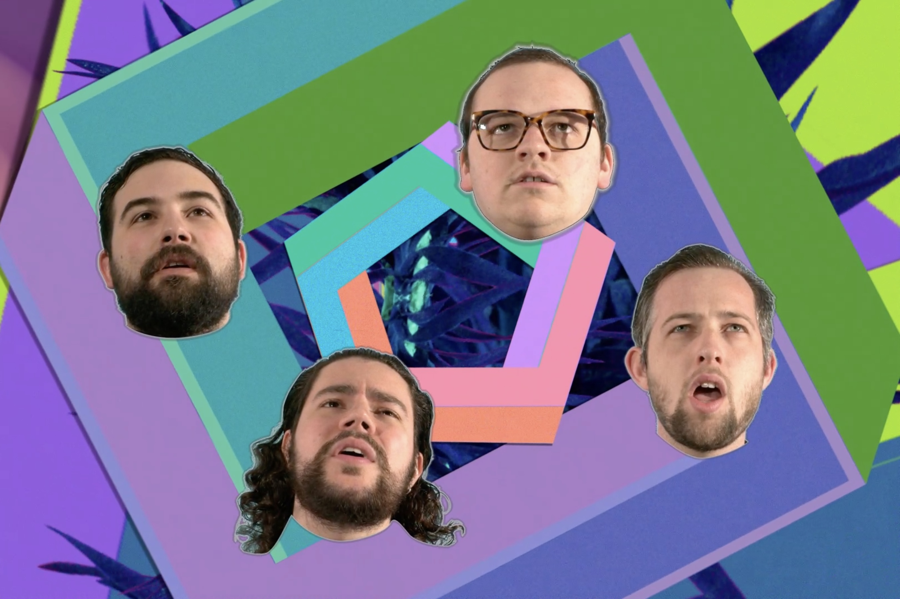

Thunder by Pyramid Thieves
5 min. 2O19
Music video for the song Thunder by Boston-based band Pyramid Thieves. I was the Editor, Visual Effects artist, and Director for the project.
Welcome to the digital archive of wil-fredo. Inside you’ll find projects created using different mediums to explore image distortion, music/visualizer pairings, and looped movements. These works were created using digital and/or analog tools.
Wilfredo is a visual artist from the island of Puerto Rico based in Brooklyn, NY. His focus is in digital video manipulation and music visualizer pairings made with TouchDesigner.
5 min. 2O19
Music video for the song Thunder by Boston-based band Pyramid Thieves. I was the Editor, Visual Effects artist, and Director for the project.